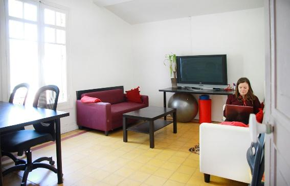
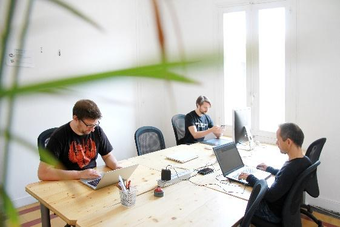

L'espace
Tu es freelance, entrepreneur, salarié en travail, pété de thune…
A force de chercher un moyen d’avoir des locaux, les six fondateurs de l’association ont fini par se rassembler pour créer un espace de coworking sur Montpellier. Nous avons décidé de créer une association pour porter ce projet, c’était en Novembre 2012.
Entre janvier 2013 et avril, nous avons occupé un local provisoire. L’objectif était d’avoir un espace de travail mais surtout un espace qui rassemble une communauté de coworkers. Nous avons une idée de ce qu’est un espace de coworking et nous cherchons à la partager, à l’améliorer avec d’autres.
Depuis début mai 2013 nous sommes dans un nouveau local. Ce lieu permet d’avoir un espace de coworking plus complet avec des salles de travail, de réunion, de détente, une cuisine. Il permet d’élargir la communauté de coworkers.
Début 2015, changement de statuts pour l’association. On passe d’un bureau avec Président, Trésorier, Secrétaire à un Collège Solidaire composé de 5 personnes et pouvant aller jusqu’à 10. Tous les membres ont les mêmes responsabilités, cela permet d’impliquer plus de personnes. Nous avons donc changer les statuts (pdf, 38ko) et le reglement interieur (pdf, 21ko).
Si vous êtes intéressé, venez vous exprimer, venez nous dire quelle vision vous avez d’un espace de coworking, comment vous aimeriez qu’il soit et voyons ce que nous pouvons faire ensemble.
Coworkers
Cowork’in Montpellier propose 24 bureaux répartis entre 4 salles en libre accès sans réservation. Plusieurs solutions s’offrent à toi :
| 1 journée | 10 journées | Mid-time | Full-time |
|---|---|---|---|
| Si tu ne fais que passer 12 € | Si tu passe à l’occasion -valable 1 an -Utilisable comme 20 demi-journées 110 € | 10 jours/mois 100€/mois* | Si tu viens tous les jours pendant 1 mois Accés illimité 180€/mois |
Tarification sans perfidie : tu as droit à tous les services disponibles sur place, quelle que soit la formule choisie.Nos forfaits au mois ne t’engagent qu’un mois.
Parties communes
 
Sur place :
- Wifi
- Imprimante A4
- Cuisine (café, thé, micro-onde, frigo …)
- Cour extérieur
- Râteliers à vélos
- Espaces téléphone
- Détente et bonne humeur
Nous pensons que les gens sont responsables et capables de créer une société où la confiance fait l’ambiance. Tu peux demander les clés, te faire du café dans des tasses, utiliser l’imprimante sans quota. Tu peux apporter ton casse-croûte pour le midi, le mettre au réfrigérateur et le réchauffer au micro-ondes. Pas de restrictions tant que la raison prime.
Salles de réunion
Location salle de réunion
| Petite salle jusqu’a 6 personne | Grande salle Plus de 6 personnes |
|---|---|
| Wifi/Bureaux/Paperboard | Wifi/Bureaux/Paperboard/Grand écran HD |
| 40 € | 50 € |
Tarification à la ½ journée
La location de salle dépend de l’occupation des lieux et de la durée.
Vous pouvez louer une salle pour des durées plus longues.Pour toute réservation, contactez-nous
Nos Tarifs
List of main characters
Coworker régulier
Juboal-Rabaroansa Perosteck Alseyn Balveda dam T’seif, usually referred to as Perosteck Balveda, is an operative of the Culture assigned to track and apprehend [Bora Horza Gobuchul](). She works for the Special Circumstances branch of Contact, and despite being ambivalent about the methods they use, deeply believes in their objectives.
Bureau
Un bureau pour bosser is a Changer and an operative of the Idiran Empire. Horza was one of a party of Changers allowed on Schar’s World, and for that reason is tasked by the Idirans with retrieving a Mind that had crashed to the planet. Horza is humanoid, but committed to the Idirans because he despises the Culture for its dependence on machines and what he perceives to be spiritual emptiness.
Meetup
Vous organisez des meetups et vous cherchez un espace pour votre groupe ?Nous vous accueillons les soirs.Presentez-nous votre groupe et vos besoins.
L'Asso
Consider Phlebas, like most of Banks’s early SF output, was a rewritten version of an earlier book, as he explained in a 1994 interview:
Phlebas was an old one too; it was written just after The Wasp Factory, in 1984. I’ve found that rewriting an old book took much more effort than writing one from scratch, but I had to go back to do right by these things. Now I can go on and start completely new stuff.